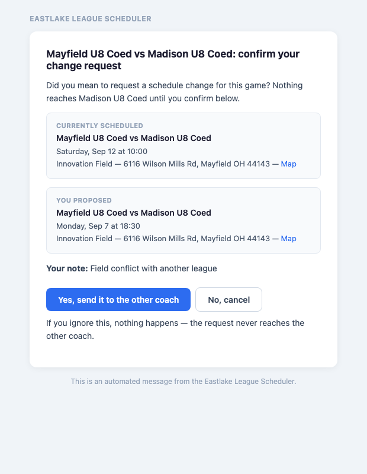
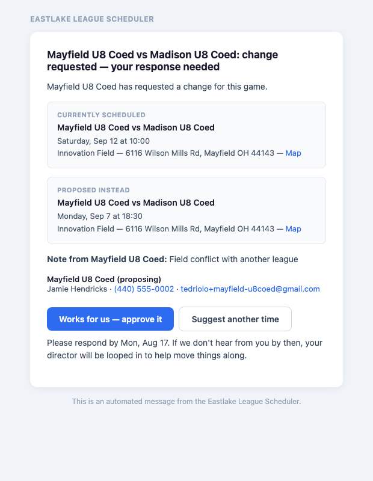
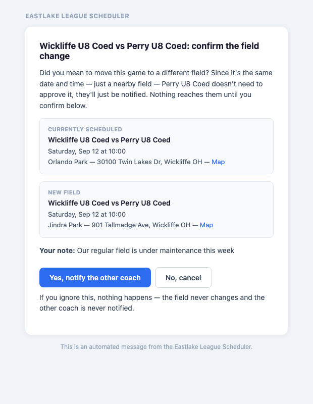
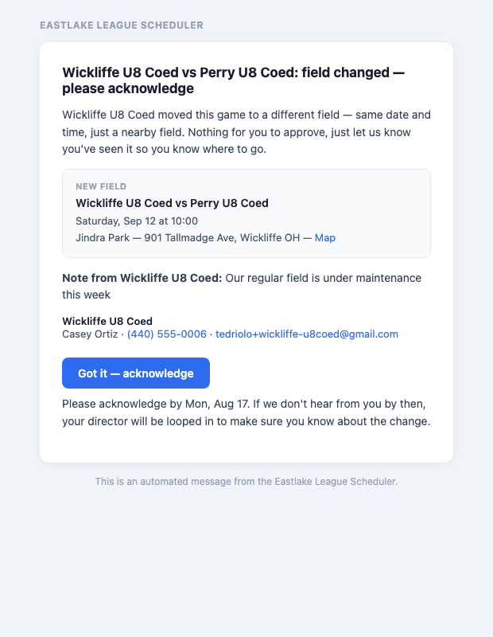
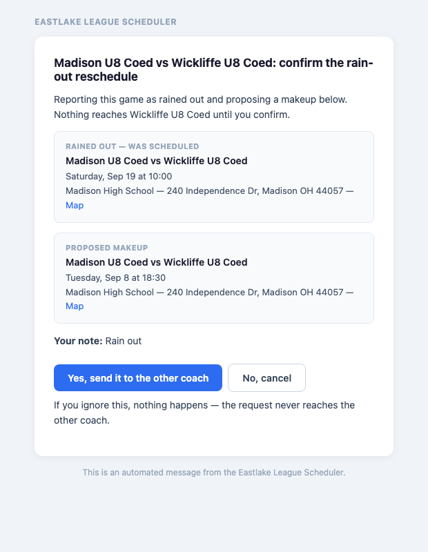

The season schedule is published. This page covers the handful of things you'll actually do with it: confirming a game as-is, and — if something doesn't work — asking to move it, swap its field, or report a rain out. Everyone (coaches and directors) uses the same buttons.
Every game starts out Scheduled. If the date, time and field all work for you as they are, open the game and click Confirm. That's it — no email round-trip, it's just a heads-up signal for your director and the other side. The game moves to Pending until the other coach also confirms, then Confirmed once you both have.
Confirming isn't a lock. You can still request a change on a game at any point, confirmed or not — it just tells everyone you're not expecting one.
Open the game and click Request Change. You'll be asked one question first:
Pick a time, add a short note if you want, and send.


The game does not move until you both agree. It stays exactly where it is, flagged Negotiating, so nobody turns up at the wrong place mid-discussion.
Date and time are fine, only the field needs to change — your regular field is closed for maintenance, say. Click Change Field on the game and pick the new one. This is lighter than a full reschedule: it's your call, not something the other coach has to approve — you're just required to let them know.


Either coach can report it — click Rain Out on the game instead of Request Change. It skips straight to picking a new day (no "just the time" option, since the whole day is out), then goes through the same back-and-forth as a normal change: the other coach approves or suggests a different makeup date, and it's not final until you both agree.
Once you do agree, the original game is marked Rained Out and stays in the schedule as history, and a new game is created on the makeup date. Nothing is deleted.

Every request email states the date you need to respond by. The window tightens as the conversation goes on, because by then you're both already engaged:
| First proposal | 3 days |
|---|---|
| Second | 2 days |
| Third onwards | 1 day |
Miss it and your director gets a nudge; keep missing it and the league admin hears. Nothing is cancelled — it just stops being only your problem.
Inside 7 days of the game? Email back-and-forth is too slow at that point. The tool shows you the other coach's phone number instead — call or text, agree it directly, then record it with Manual Override on the game. That applies immediately and both directors are notified.
Need something not covered here — setting your availability, adding a team, reporting a score? See the full guide. Still stuck? Coaches — ask your program director. Directors — ask the league admin.